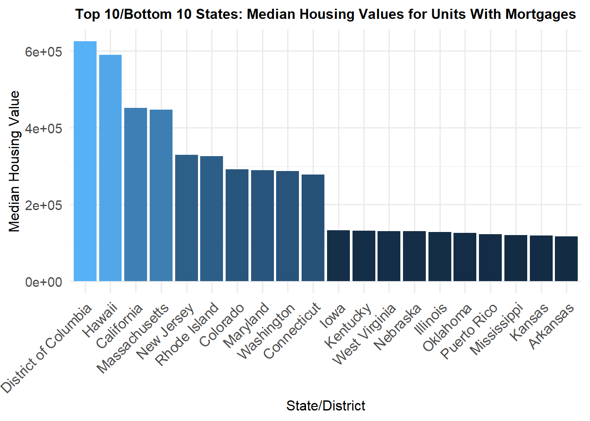
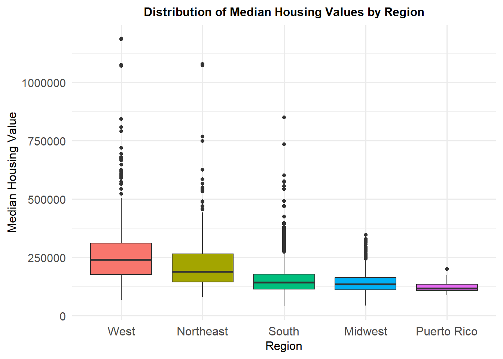
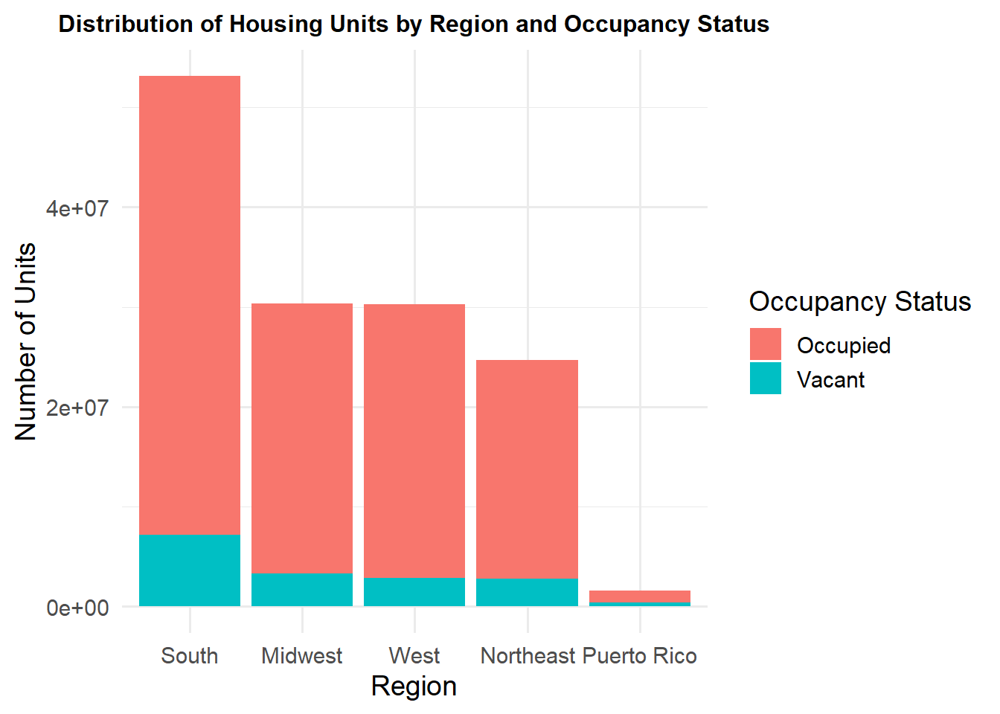
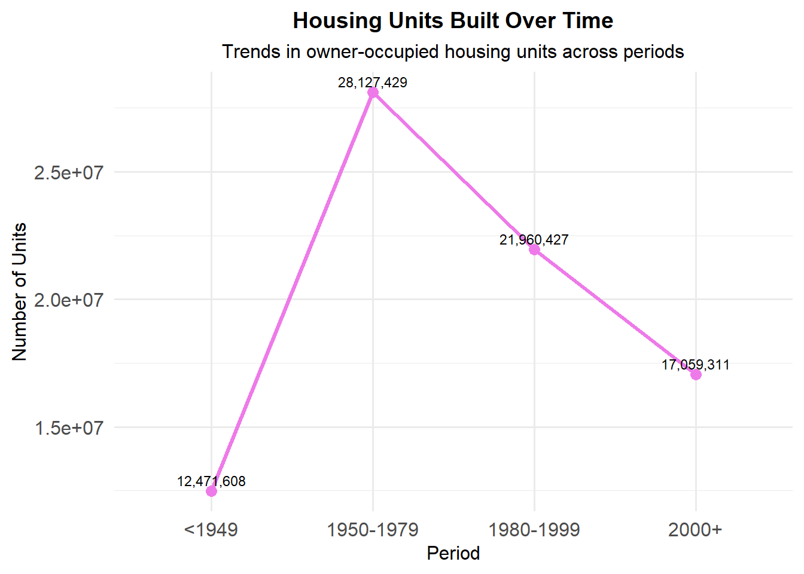
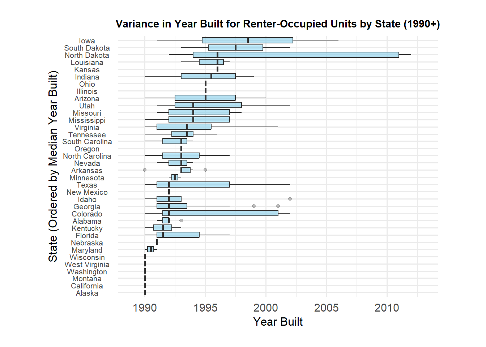
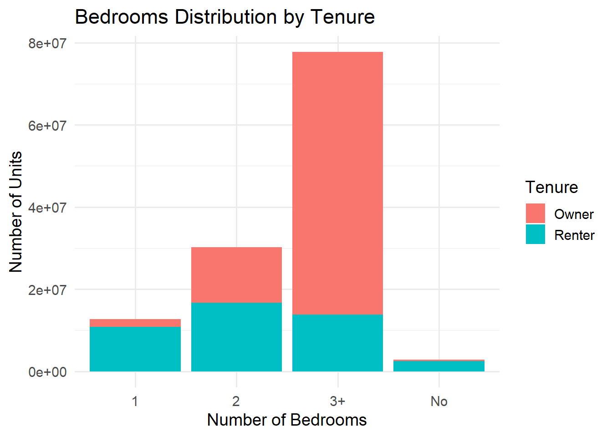
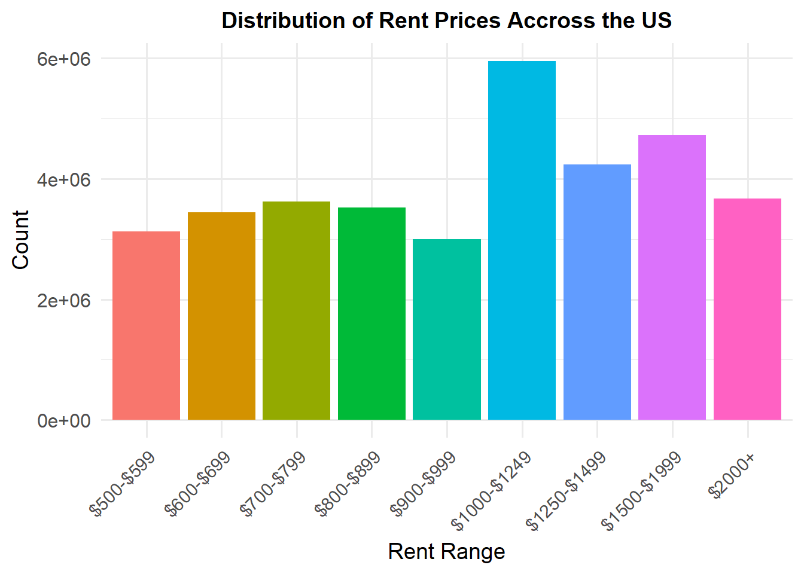
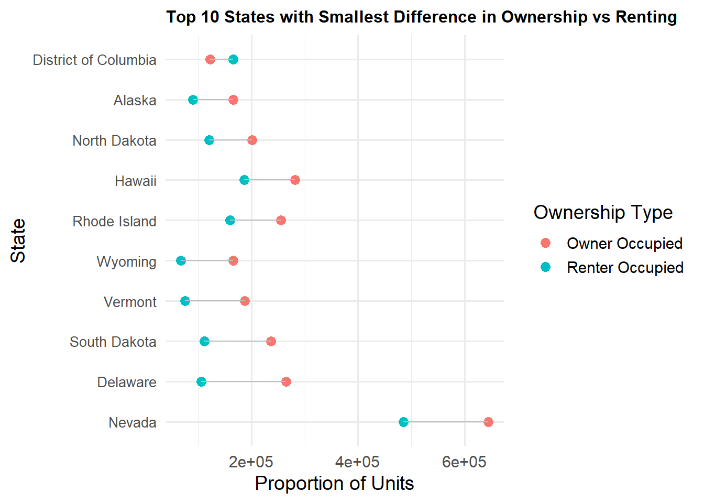

Attaching package: 'reshape2'
The following object is masked from 'package:tidyr':
smiths
Code
input <-"data.csv"data <-read.csv(input)
Code
data$Median_value_for_units_with_a_mortgage <-as.numeric(data$Median_value_for_units_with_a_mortgage)state_averages <- data |>group_by(STATE_NAME) |>summarise(Median_value_for_units_with_a_mortgage =mean(Median_value_for_units_with_a_mortgage, na.rm =TRUE))top_10_states <- state_averages |>arrange(desc(Median_value_for_units_with_a_mortgage)) |>slice_head(n =10)bottom_10_states <- state_averages |>arrange(Median_value_for_units_with_a_mortgage) |>slice_head(n =10)combined_states <-bind_rows(top_10_states, bottom_10_states)combined_states <- combined_states |>arrange(desc(Median_value_for_units_with_a_mortgage)) |>mutate(STATE_NAME =factor(STATE_NAME, levels = STATE_NAME))ggplot(combined_states, aes(x = STATE_NAME, y = Median_value_for_units_with_a_mortgage, fill = Median_value_for_units_with_a_mortgage)) +geom_bar(stat ="identity", show.legend =FALSE) +labs(title ="Top 10/Bottom 10 States: Median Housing Values for Units With Mortgages",x ="State/District",y ="Median Housing Value" ) +theme_minimal(base_size =14) +theme(plot.title =element_text(size =12, hjust =0.5, face ="bold"),axis.text.x =element_text(angle =45, hjust =1, size =12),axis.title.x =element_text(size =12),axis.title.y =element_text(size =12) )

This graph is showing the median housing trends for states and DC/Puerto Rico across the country. The values/trends you can see here are distributed unevenly. This is because the coastal states or states with bigger urban areas have higher prices and this can be seen because of higher demand and economic status compared to the rural states have lower values.
Warning: Removed 10 rows containing non-finite outside the scale range
(`stat_boxplot()`).

This graph shows the distribution of median housing values per region.Going off of the last graph we wanted to see if it was a regional trend. It can be seen that the northeast and the west are higher than the south and midwest. This goes with the same idea mentioned before that economically higher places that have urban demand are more expensive regions compared to more rural regions. As a note, we decided to include Washington D.C. in the northeast and include Puerto Rico by itself.
Code
state_occupancy_data <- data |>group_by(STATE_NAME) |>summarise(Total =sum(`Occupancy_Status.Total_Housing_units.`, na.rm =TRUE),Occupied =sum(`Occupancy_Status.Occupied_housing_units.`, na.rm =TRUE),Vacant =sum(`Occupancy_Status.Vacant.`, na.rm =TRUE) ) |>pivot_longer(cols =c("Total", "Occupied", "Vacant"), names_to ="Status", values_to ="Units")state_occupancy_data <- state_occupancy_data |>mutate(Region =case_when( STATE_NAME %in%c("Connecticut", "Maine", "Massachusetts", "New Hampshire", "Rhode Island", "Vermont", "New Jersey", "New York", "Pennsylvania", "District of Columbia") ~"Northeast", STATE_NAME %in%c("Illinois", "Indiana", "Iowa", "Kansas", "Michigan", "Minnesota", "Missouri", "Nebraska", "North Dakota", "Ohio", "South Dakota", "Wisconsin") ~"Midwest", STATE_NAME %in%c("Alabama", "Arkansas", "Delaware", "Florida", "Georgia", "Kentucky", "Louisiana", "Maryland", "Mississippi", "North Carolina", "Oklahoma", "South Carolina", "Tennessee", "Texas", "Virginia", "West Virginia") ~"South", STATE_NAME %in%c("Alaska", "Arizona", "California", "Colorado", "Hawaii", "Idaho", "Montana", "Nevada", "New Mexico", "Oregon", "Utah", "Washington", "Wyoming") ~"West", STATE_NAME %in%c("Puerto Rico") ~"Puerto Rico" ))# Filter out the "Total" categorystate_occupancy_data <- state_occupancy_data |>filter(Status !="Total")region_totals <- state_occupancy_data |>group_by(Region) |>summarise(Total_Units =sum(Units, na.rm =TRUE)) |>arrange(desc(Total_Units))state_occupancy_data <- state_occupancy_data |>mutate(Region =factor(Region, levels = region_totals$Region))ggplot(state_occupancy_data, aes(x = Region, y = Units, fill = Status)) +geom_bar(stat ="identity", position ="stack") +theme_minimal(base_size =14) +labs(title ="Distribution of Housing Units by Region and Occupancy Status",x ="Region",y ="Number of Units",fill ="Occupancy Status" ) +theme(axis.text.x =element_text(angle =0, hjust =0.5),plot.title =element_text(size =12, hjust =0.5, face ="bold"))

This graph is explaining how different regions and their housing occupancy. We chose to include Puerto Rico in its own group and Washington D.C. in the Northeast like we did previously. The south has the highest total than the others by a significant amount. Surprisingly the Northeast has the least amount of units not including Puerto Rico by itself. This may be due to the overall area of the northeast being smaller than the other regions, but it is still surprising. The vacant is higher in rural and economically smaller areas while more dense places that economically higher and higher demand have less vacant units.
Code
year_built_data <- data |>summarise(`Owner 2000+`=sum(`Owner_Tenure_By_Year_Structure_Built.Owner_occupied_housing_units_Built_2000_or_later.`, na.rm =TRUE),`Owner 1980-1999`=sum(`Owner_Tenure_By_Year_Structure_Built.Owner_occupied_housing_units_Built_1980_to_1999.`, na.rm =TRUE),`Owner 1950-1979`=sum(`Owner_Tenure_By_Year_Structure_Built.Owner_occupied_housing_units_Built_1950_to_1979.`, na.rm =TRUE),`Owner <1949`=sum(`Owner_Tenure_By_Year_Structure_Built.Owner_occupied_housing_units_Built_1949_or_earlier.`, na.rm =TRUE) ) |>pivot_longer(cols =everything(), names_to ="Category", values_to ="Units") |>separate(Category, into =c("Tenure", "Period"), sep =" ")ggplot(year_built_data, aes(x = Period, y = Units, group =1)) +geom_line(size =1.2, color ="orchid2") +geom_point(size =3, color ="orchid2") +geom_text(aes(label = scales::comma(Units)), vjust =-0.5, size =3, show.legend =FALSE) +labs(title ="Housing Units Built Over Time",subtitle ="Trends in owner-occupied housing units across periods",x ="Period",y ="Number of Units" ) +theme_minimal(base_size =14) +theme(plot.title =element_text(size =14, hjust =0.5, face ="bold"),plot.subtitle =element_text(size =12, hjust =0.5),axis.text.x =element_text(size =12),axis.text.y =element_text(size =12),axis.title.x =element_text(size =12),axis.title.y =element_text(size =12),legend.position ="none" )
Warning: Using `size` aesthetic for lines was deprecated in ggplot2 3.4.0.
ℹ Please use `linewidth` instead.

In this graph the trend of when units were built over the countries history. We wanted to observe this because we had seen all the reports about home construction being down. From the graph we can now see that the number of new houses being built has been consistently dropping since the baby boom. This could be due to economic trends and how the country is growing.
Code
filtered_data <- data |>filter(Median_Year_Structure_Built_By_Tenure.Median_Year_Structure_Built_for_Renter_Occupied_Units. >=1990& Median_Year_Structure_Built_By_Tenure.Median_Year_Structure_Built_for_Renter_Occupied_Units. <=2022)ggplot(filtered_data, aes(x =reorder(STATE_NAME, Median_Year_Structure_Built_By_Tenure.Median_Year_Structure_Built_for_Renter_Occupied_Units., median),y = Median_Year_Structure_Built_By_Tenure.Median_Year_Structure_Built_for_Renter_Occupied_Units.)) +geom_boxplot(outlier.alpha =0.3, fill ="skyblue", alpha =0.6) +theme_minimal(base_size =14) +labs(title ="Variance in Year Built for Renter-Occupied Units by State (1990+)",x ="State (Ordered by Median Year Built)",y ="Year Built" ) +theme(plot.title =element_text(size =11, hjust =0.5, face ="bold"),axis.text.y =element_text(size =8, hjust =0.5),axis.title.x =element_text(size =12),axis.title.y =element_text(size =12),plot.margin =margin(20, 50, 20, 50) ) +scale_y_continuous(expand =expansion(mult =c(0.1, 0.1))) +coord_flip()

Continuing on the findings from the previous graph where we looked at owner-occupied housing building trends we wanted to now look at the renter-occupied build dates but by state. We can see here that states in the south and west have newer houses due to growing population and development and midwest/northeast houses are on the older side. We chose to show states whose median year built was beyond 1990 and the graph shows how only a few states even have a median year built beyond 1990. This once again, reinforces the idea that house construction has been continously declining.
Code
structure_data <- data %>%summarise(Detached =sum(`Units_In_Structure.1unit_detached_structure.`, na.rm =TRUE),Attached =sum(`Units_In_Structure.1unit_attached_structure.`, na.rm =TRUE),`2-4 Units`=sum(`Units_In_Structure.2_to_4_units.`, na.rm =TRUE),`5-19 Units`=sum(`Units_In_Structure.5_to_19_units.`, na.rm =TRUE),`20+ Units`=sum(`Units_In_Structure.20_or_more_units.`, na.rm =TRUE),Mobile =sum(`Units_In_Structure.Mobile_home_Boat_RV_van_et.`, na.rm =TRUE) ) %>%pivot_longer(cols =everything(), names_to ="Structure_Type", values_to ="Units")structure_data <- structure_data %>%mutate(Structure_Type = forcats::fct_reorder(Structure_Type, Units, .desc =TRUE))# Plotggplot(structure_data, aes(x = Structure_Type, y = Units, fill = Structure_Type)) +geom_bar(stat ="identity") +theme_minimal(base_size =14) +labs(title ="Housing Units by Structure Type (Ordered by Frequency)",x ="Structure Type",y ="Number of Units" ) +theme(legend.position ="none")
This graph we wanted to see what kind of structure was being built as we explore more about housing types. We can see that detached by far is dominated the market. This shows that people and families are preferring standalone homes in all types of regions. From what we got gathered earlier though, most of these detached houses are very old houses.
ggplot(bedroom_data, aes(x = Bedrooms, y = Units, fill = Tenure)) +geom_bar(stat ="identity", position ="stack") +theme_minimal(base_size =14) +labs(title ="Bedrooms Distribution by Tenure", x ="Number of Bedrooms", y ="Number of Units", fill ="Tenure")

This graph was to follow up on the last graph and wanted to see the size of the houses that were built and if it had to do with the type of ownership. It can be seen here that units with 3+ bedrooms are mostly owned instead of rented. The renters seem to prefer smaller places like 1 or 2 bedrooms for affordability and tenant needs. This makes sense because people in need of more bedrooms typically tend to move into their own house rather than rent from someone else.
Code
# Aggregate the data to show the distribution of rent rangesrent_distribution <- data |>pivot_longer(cols =starts_with("Contract_Rent"),names_to ="Rent_Range",values_to ="Count" ) |>mutate(Rent_Range =case_when(str_detect(Rent_Range, "500_to_599") ~"$500-$599",str_detect(Rent_Range, "600_to_699") ~"$600-$699",str_detect(Rent_Range, "700_to_799") ~"$700-$799",str_detect(Rent_Range, "800_to_899") ~"$800-$899",str_detect(Rent_Range, "900_to_999") ~"$900-$999",str_detect(Rent_Range, "1000_to_1249") ~"$1000-$1249",str_detect(Rent_Range, "1250_to_1499") ~"$1250-$1499",str_detect(Rent_Range, "1500_to_1999") ~"$1500-$1999",str_detect(Rent_Range, "2000_or_more") ~"$2000+",TRUE~NA_character_ ) ) |>filter(!is.na(Rent_Range)) |>group_by(Rent_Range) |>summarise(Count =sum(Count, na.rm =TRUE), .groups ="drop") |>mutate(Rent_Range =factor(Rent_Range, levels =c("$500-$599", "$600-$699", "$700-$799", "$800-$899", "$900-$999", "$1000-$1249", "$1250-$1499", "$1500-$1999", "$2000+" )))# Create a bar chart showing the distribution of rent rangesggplot(rent_distribution, aes(x = Rent_Range, y = Count, fill = Rent_Range)) +geom_bar(stat ="identity", show.legend =FALSE) +labs(title ="Distribution of Rent Prices Accross the US",x ="Rent Range",y ="Count" ) +theme_minimal(base_size =14) +theme(plot.title =element_text(size =14, hjust =0.5, face ="bold"),axis.text.x =element_text(angle =45, hjust =1),axis.text.y =element_text(size =12) )

This graph shows the different ranges of rent since we are curious how the price varies throughout the country which is more prevalent. We can see here that 1000-1249$ is the highest meaning the middle class is probably the most common renters but the rest are pretty uniform. However, we were surprised to see that the distribution of rent prices is fairly even.
Continuing from the previous graph we then wanted to observe how the rent prices changed per region as we had observed the median house prices per region earlier. As expected, we saw a similar trend as when we did the median unit prices per region where the West and Northeast regions were the most expensive. In addition, this trend makes sense as most of the major cities in the US are in the West and Northwest regions and these cities typically have the most expensive costs of living. Also, from the graph we see that the rent range $1000 - $1249 seems to be the most common one. Unlike previous graphs faceted on region, we chose not to include Puerto Rico in this one at all.
Code
ownership_data_by_state <- data |>group_by(STATE_NAME) |>summarise(Owner_Occupied =sum(`Tenure_By_Household_Size.Owner_Occupied.`, na.rm =TRUE),Renter_Occupied =sum(`Tenure_By_Household_Size.Renter_Occupied.`, na.rm =TRUE) ) |>pivot_longer(cols =c(Owner_Occupied, Renter_Occupied), names_to ="Ownership", values_to ="Units")ownership_diff <- ownership_data_by_state |>pivot_wider(names_from = Ownership, values_from = Units) |>mutate(Difference =abs(Owner_Occupied - Renter_Occupied))top_states <- ownership_diff |>arrange(Difference) |>slice_head(n =10)ggplot(top_states, aes(x =reorder(STATE_NAME, -Difference))) +geom_point(aes(y = Owner_Occupied, color ="Owner Occupied"), size =3) +geom_point(aes(y = Renter_Occupied, color ="Renter Occupied"), size =3) +geom_segment(aes(xend = STATE_NAME, y = Owner_Occupied, yend = Renter_Occupied), color ="gray") +coord_flip() +labs(title ="Top 10 States with Smallest Difference in Ownership vs Renting",x ="State",y ="Proportion of Units",color ="Ownership Type" ) +theme_minimal(base_size =14) +theme(axis.text.y =element_text(size =10),plot.title =element_text(size =12, face ="bold") )

Lastly, we created this graph was created to see which 10 states within the country had the smallest disparity between owners and renter percentage. We ordered the ten states from those with the lowest differences between owners and renters to those with the highest. A huge surprise from this is that in Washington D.C. there are actually more people renting a place than owning a place. We assumed that the states with more major cities would have smaller disparities between owner occupied and renter occupied because people in cities typically rent. However, we were surprised to see that many smaller states such as Wyoming, Rhode Island, and Wyoming were among the ones with the smallest difference.